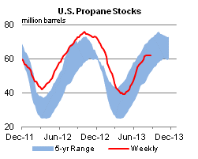

Released: August 28, 2013
Next Release: September 5, 2013
NOTICE: Because of the Labor Day holiday, next week's petroleum data and TWIP feature article will be available mid-afternoon on Thursday, September 5, 2013.
West Coast Leads Recent Gasoline Price Declines
As the Labor Day weekend approaches, the U.S. national average retail price for regular gasoline has drifted downward from a summer-to-date peak of $3.68 per gallon, reached on July 22, to $3.55 per gallon on August 26, despite an increase in crude oil prices since early July. This decrease in the U.S. average regular gasoline price has been led by declining retail gasoline prices on the West Coast (Figure 1). On August 26, the West Coast (PADD 5) average retail price for regular grade gasoline was $3.75 per gallon, 21 cents per gallon lower than the $3.95-per-gallon average on July 22.
{kind=link}
The decline in retail prices on the West Coast results largely from a well-supplied California gasoline market. California is the largest gasoline market on the West Coast, accounting for almost two-thirds of gasoline sales in the region in 2012, and price trends in California tend to drive trends in the region as a whole. The average price for regular gasoline in California fell by 23 cents per gallon since July 22 to $3.80 per gallon on August 26. Data from the California Energy Commission indicate that in 7 of the last 10 weeks, California refiners' production of gasoline that meets the California Air Resources Board's specification (CARBOB) has been near or above the top of the five-year range for the given week. In contrast, EIA data show that gross refinery inputs for the entire PADD 5 region have been below the five-year average in recent weeks. This is partially attributable to the closure of Tesoro's 94,000-barrel-per-day Kapolei refinery in Hawaii earlier this year – the sale of which has since been announced and which is slated to reopen in September – and lower throughputs in other PADD 5 refineries outside of California. EIA does not collect state-level demand data, but trade press reports indicate that demand in California has been weak over the summer.
As of August 23, gasoline inventories on the West Coast (EIA does not collect inventory data for California alone) stood at 28.4 million barrels, 0.9 million barrels (3 percent) above the five-year average level for that week, and near the top of the 5-year range (Figure 2). The current inventory level is also 2.5 million barrels higher than inventories in late April, a significant counter-seasonal increase. Typically, West Coast inventories fall by about 3.0 million barrels from late-April to late-August. High inventory levels can provide a buffer against the price effects of refinery outages, especially in the relatively isolated California market, where resupply from outside the region can take more than a week to arrive and can be quite costly. Current gasoline inventory on the West Coast is much higher than in 2012, when the region experienced a series of unanticipated refinery outages that resulted in several retail gasoline price spikes. Last year, significant refinery outages early in the year resulted in tight gasoline supplies in the spring and persistently low inventory levels that did not recover until the middle of autumn.
{kind=link}
All else equal, changes in gasoline prices follow changes in crude prices. However, the ample supply of gasoline has tempered gasoline prices on the West Coast. As of August 22, spot prices for CARBOB in Los Angeles and San Francisco were both trading at 26-cent-per-gallon discounts to reformulated blendstock for oxygenate blending (RBOB) in New York Harbor. In June, before the recent drop in prices, CARBOB spot prices in Los Angeles and San Francisco traded at monthly-average premiums to New York RBOB of 22 and 16 cents per gallon, respectively. Given the lagged relationship between wholesale prices and retail prices, current wholesale price levels indicate that without further changes to the market, there could be additional decreases in West Coast gasoline prices.
Although the retail gasoline price in California has declined more than the U.S. national average price, it remains 25 cents per gallon above the U.S. average. Higher-than-average state excise taxes on gasoline and a higher cost to produce CARBOB, which has a lower Reid Vapor Pressure requirement than other U.S. gasoline blendstocks, cause California retail prices to be among the highest in the country. As of the beginning of 2013, state and federal excise taxes accounted for about 38 cents of the price of each gallon of gasoline sold in California, the most of any state in the country. In addition to these taxes, California levies a 2.25 percent sales tax on each gallon of gasoline sold, and some local California jurisdictions also impose taxes.
Gasoline Price Up Less Than a Penny; Diesel Fuel Up One Cent
The U.S. average retail price of regular gasoline increased less than one cent to remain at $3.55 per gallon as of August 26, 2013, 22 cents lower than last year at this time. Prices increased by two cents in the Midwest to $3.52 per gallon, and by one cent on the Gulf Coast to $3.38 per gallon, while decreasing in all other regions. The West Coast price is $3.75 per gallon, down three cents from last week. The Rocky Mountain price is lower by two cents at $3.62 per gallon. Rounding out the regions, the East Coast price is down less than a penny to remain at $3.55 per gallon.
The national average diesel fuel price increased one cent to $3.91 per gallon, 18 cents lower than last year at this time. Prices increased one cent in the East Coast, Gulf Coast, and Rocky Mountain regions, to $3.93 per gallon, $3.83 per gallon, and $3.93 per gallon, respectively. In the Midwest and West Coast regions, prices are $3.88 per gallon and $4.07 per gallon, respectively, up two cents from last week.
Propane Inventories Gain
Total U.S. inventories of propane increased 0.2 million barrels from last week to end at 62.1 million barrels, but are 9.6 million barrels (13.4 percent) lower than the same period a year ago. Gulf Coast and Rocky Mountain/West Coast inventories each gained by 0.1 million barrels, while East Coast inventories increased slightly. Midwest inventories decreased by 0.1 million barrels. Propylene non-fuel-use inventories represented 4.5 percent of total propane inventories.
Text from the previous editions of This Week In Petroleum is accessible through a link at the top right-hand corner of this page.
| Retail Data | Change From Last | Retail Data | Change From Last | ||||
| 08/26/13 | Week | Year | 08/26/13 | Week | Year | ||
| Gasoline | 3.552 | Diesel Fuel | 3.913 | ||||
|
|||||||||||||||||||||||||||
| *Note: Crude Oil Price in Dollars per Barrel. | |||||||||||||||||||||||||||
|  | |||||||
| Stocks Data | Change From Last | Stocks Data | Change From Last | ||||
| 08/23/13 | Week | Year | 08/23/13 | Week | Year | ||
| Crude Oil | 362.0 | Distillate | 129.0 | ||||
| Gasoline | 217.8 | Propane | 62.072 | ||||